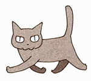
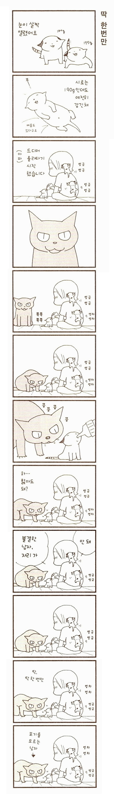
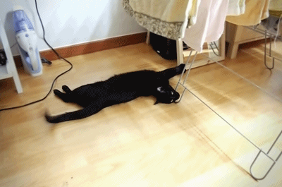

여기 등장하는 고양이 중에 간장과 무척 닮은 녀석이 있다.
이름은 카라스봉.

봉이라고 해.
이 녀석은 단순 유쾌한 성격에 아깽이를 좋아하는 캐릭터인데
망고랑 지내는 간장을 보니 자꾸만 봉 생각이 났다.
아래는 아깽이들과 처음 만난 봉 에피소드.

쿠루네코 야마토 글.그림, 박지선 옮김
중앙books(중앙북스)
오랜만에 봉 얘기를 읽었더니 새삼 간장이 보고 싶어서
자는 녀석을 조심스레 불렀는데...
.
.
.

팡 팡!
...아, 미안. ( =_=)